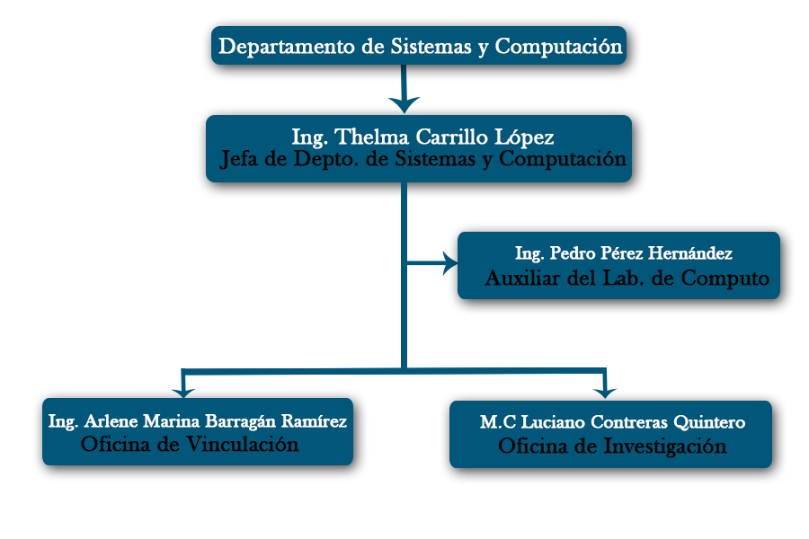

El Instituto Tecnológico de Matehuala establece el compromiso de implementar todos sus procesos, orientándolos hacia la satisfacción de sus clientes sustendada en la Calidad del Proceso de Educativo, para cumplir con sus requisitos, mediante la eficacia de un Sistema de Gestión de la Calidad y de mejora continua, conforme a la normal ISO 9001:2008/MNX-CC-9001-IMNC2008
